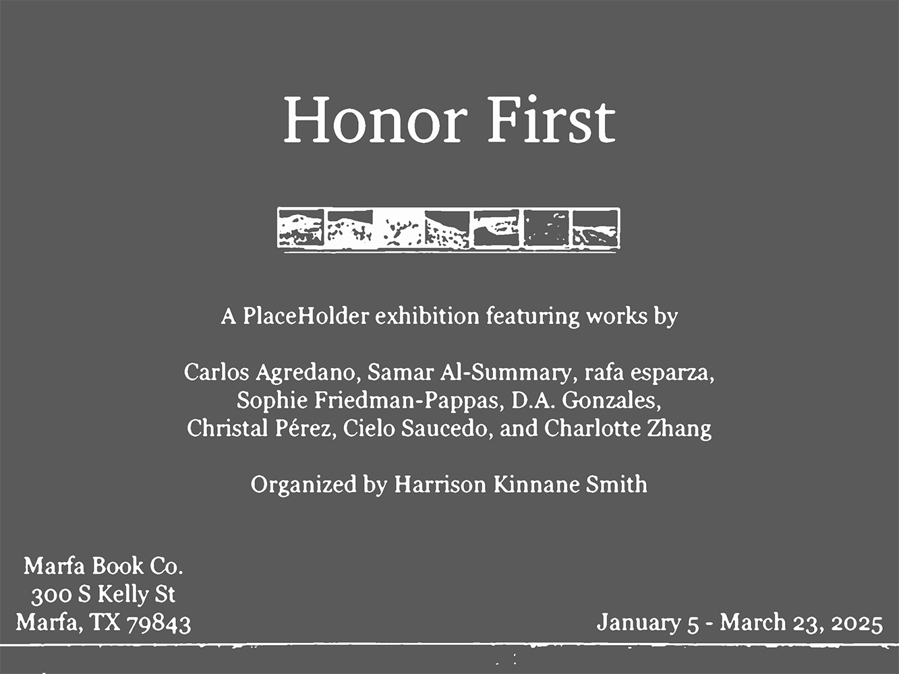
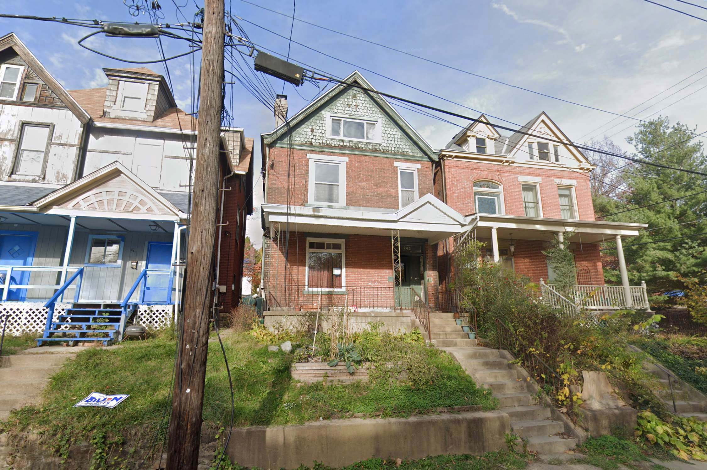

Cielo Saucedo
b. 1995 Los Angeles, CA Cielo Saucedo’s work is mediated through the wax and wane of their ability. From this direct response to their body, an unprivileged deployment of medium and genre generate their practice. They are based in Los Angeles. Exhibitions

Honor First
Carlos Agredano, Samar Al-Summary, rafa esparza, Sophie Friedman-Pappas, D.A. Gonzales, Christal Pérez, Cielo Saucedo, and Charlotte Zhang Jan - March 2025

Interburden
Cielo Saucedo & Jerome Sicard June 2023